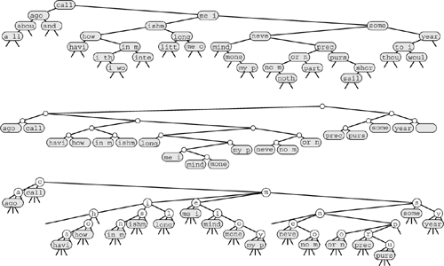

C++ Programming Robert Sedgewick - Princeton University Addison Wesley Professional Algorithms in C++, Parts 1–4: Fundamentals, Data Structure, Sorting, Searching, Third Edition
15.5. Text-String–Index Algorithms
In Section 12.7, we considered the process of building a string index, and we used a binary search tree with string pointers to provide the capability to determine whether or not a given key string appears in a huge text. In this section, we look at more sophisticated algorithms using multiway tries, but starting from the same point of departure. We consider each position in the text to be the beginning of a string key that runs all the way to the end of the text and build a symbol table with these keys, using string pointers. The keys are all different (for example, they are of different lengths), and most of them are extremely long. The purpose of a search is to determine whether or not a given search key is a prefix of one of the keys in the index, which is equivalent to discovering whether the search key appears somewhere in the text string.
A search tree that is built from keys defined by string pointers into a text string is called a suffix tree. We could use any algorithm that can admit variable-length keys. Trie-based methods are particularly suitable, because (except for the trie methods that do one-way branching at the tails of keys) their running time does not depend on the key length, but rather depends on only the number of digits required to distinguish among the keys. This characteristic lies in direct contrast to, for example, hashing algorithms, which do not apply immediately to this problem because their running time is proportional to the key length.
Figure 15.20 gives examples of string indexes built with BSTs, patricia, and TSTs (with leaves). These indexes use just the keys starting at word boundaries; an index starting at character boundaries would provide a more complete index, but would use significantly more space.
These diagrams show text-string indexes built from the text call me ishmael some years ago never mind how long precisely... using a BST (top), a patricia trie (center), and a TST (bottom). Nodes with string pointers are depicted with the first four characters at the point referenced by the pointer. 
Strictly speaking, even a random string text does not give rise to a random set of keys in the corresponding index (because the keys are not independent). However, we rarely work with random texts in practical indexing applications, and this analytic discrepancy will not stop us from taking advantage of the fast indexing implementations that are possible with radix methods. We refrain from discussing the detailed performance characteristics when we use each of the algorithms to build a string index, because many of the same tradeoffs that we have discussed for general symbol tables with string keys also hold for the string-index problem.
For a typical text, standard BSTs would be the first implementation that we might choose, because they are simple to implement (see Program 12.10). For typical applications, this solution is likely to provide good performance. One byproduct of the interdependence of the keys—particularly when we are building a string index for each character position—is that the worst case for BSTs is not a particular concern for huge texts, since unbalanced BSTs occur with only bizarre constructions.
Patricia was originally designed for the string-index application. To use Programs 15.5 and 15.4, we need only to provide an implementation of bit that, given a string pointer and an integer i, returns the ith bit of the string (see Exercise 15.82). In practice, the height of a patricia trie that implements a text string index will be logarithmic. Moreover, a patricia trie will provide fast search implementations for misses because we do not need to examine all the bytes of the key.
TSTs afford several of the performance advantages of patricia, are simple to implement, and take advantage of built-in byte-access operations that are typically found on modern machines. They also are amenable to simple implementations, such as Program 15.9, that can solve search problems more complicated than fully matching a search key. To use TSTs to build a string index, we need to remove the code that handles ends of keys in the data structure, since we are guaranteed that no string is a prefix of another, and thus we never will be comparing strings to their ends. This modification includes changing the definition of operator== in the item-type interface to regard two strings as equal if one is a prefix of the other, as we did in Section 12.7, since we will be comparing a (short) search key against a (long) text string, starting at some position in the text string. A third change that is convenient is to keep string pointers in each node, rather than characters, so that every node in the tree refers to a position in the text string (the position in the text string following the first occurrence of the character string defined by the characters on equal branches from the root to that node). Implementing these changes is an interesting and informative exercise that leads to a flexible and efficient text-string–index implementation (see Exercise 15.81).
Despite all the advantages that we have been discussing, there is an important fact that we are overlooking when considering the use of BSTs, patricia tries, or TSTs for typical text indexing applications: the text itself is usually fixed, so we do not need to support the dynamic insert operations that we have become accustomed to supporting. That is, we typically build the index once, then use it for a huge number of searches, without ever changing it. Therefore, we may not need dynamic data structures like BSTs, patricia tries or TSTs at all. The basic algorithm that is appropriate for handling this situation is binary search, with string pointers (see Section 12.4). The index is a set of string pointers; index construction is a string pointer sort. The primary advantage of using binary search over a dynamic data structure is the space savings. To index a text string at N positions using binary search, we need just N string pointers; in contrast, to index a string at N positions using a tree-based method, we need at least 3N pointers (one string pointer, to the text, and two links). Text indexes are typically huge, so binary search might be preferred because it provides guaranteed logarithmic search time but uses one-third the amount of memory used by tree-based methods. If sufficient memory space is available, however, TSTs will lead to a faster search for many applications because it moves through the key without retracing its steps, and binary search does not do so.
If we have a huge text but plan to perform only a small number of searches, then building a full index is not likely to be justified. In Part 5, we consider the string-search problem, where we want to determine quickly whether a given text contains a given search key, without any preprocessing. We shall also consider a number of string-search problems that are between the two extremes of doing no preprocessing and building a full index for a huge text.
Exercises |
 15.77 Draw the 26-way DST that results when you build a text-string index from the words now is the time for all good people to come the aid of their party.
15.77 Draw the 26-way DST that results when you build a text-string index from the words now is the time for all good people to come the aid of their party. | |
15.78 Draw the 26-way trie that results when you build a text-string index from the words now is the time for all good people to come the aid of their party. | |
15.79 Draw the TST that results when you build a text-string index from the words now is the time for all good people to come the aid of their party, in the style of Figure 15.20. | |
15.80 Draw the TST that results when you build a text-string index from the words now is the time for all good people to come the aid of their party, using the implementation described in the text, where the TST contains string pointers at every node. | |
 15.81 Modify the TST search and insertion implementations in Programs 15.11 and 15.12 to provide a TST-based string index.
15.81 Modify the TST search and insertion implementations in Programs 15.11 and 15.12 to provide a TST-based string index. | |
15.82 Implement an interface that allows patricia to process C-style string keys (that is, arrays of characters) as though they were bitstrings. | |
15.83 Draw the patricia trie that results when you build a text string index from the words now is the time for all good people to come the aid of their party, using a 5-bit binary coding with the ith letter in the alphabet represented by the binary representation of i. | | 15.84 Explain why the idea of improving binary search using the same basic principle on which TSTs are based (comparing characters rather than strings) is not effective. | | 15.85 Find a large (at least 106 bytes) text file on your system, and compare the height and internal path length of a standard BST, patricia trie, and TST, when you use these methods to build an index from that file. | | 15.86 Run empirical studies to compare the height and internal path length of a standard BST, patricia trie, and TST, when you use these methods to build an index from a text string consisting of N random characters from a 32-character alphabet, for N = 103, 104, 105, and 106. | |
15.87 Write an efficient program to determine the longest repeated sequence in a huge text string. | |
15.88 Write an efficient program to determine the 10-character sequence that occurs most frequently in a huge text string. | |
 15.89 Build a string index that supports an operation that returns the number of occurrences of its argument in the indexed text, and supports, in the same manner as sort, a search operation that visits all the text positions that match the search key.
15.89 Build a string index that supports an operation that returns the number of occurrences of its argument in the indexed text, and supports, in the same manner as sort, a search operation that visits all the text positions that match the search key. | |
15.90 Describe a text string of N characters for which a TST-based string index will perform particularly badly. Estimate the cost of building an index for the same string with a BST. | | 15.91 Suppose that we want to build an index for a random N-bit string, for bit positions that are a multiple of 16. Run empirical studies to determine which of the bytesizes 1, 2, 4, 8, or 16 leads to the lowest running times to construct a TST-based index, for N = 103, 104, 105, and 106. |
|